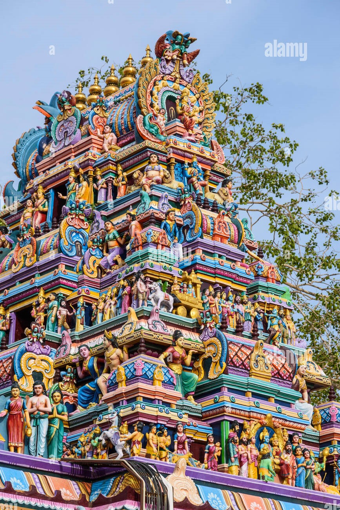

Attukal Bhagavathy Temple
Attukal,Manacaud,Thiruvananthapuram

The Attukal Bhagavathy Temple is a Hindu religious shrine at Attukal in Kerala, India. Goddess Bhadrakali (Kannaki), mounted over 'vethala', is the main deity in this temple.The Goddess Kannaki (Bhadrakali) is the main deity in this temple. Attukal Pongala is the main. Attukal Pongala Mahotsavam is a 10 days festival which falls on February-March every year .